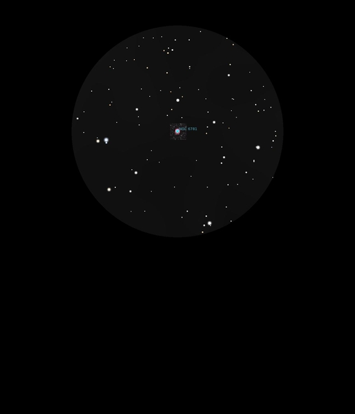

NGC 6781
Planetary Nebula in Aquila
NGC 6781
Mag 11.8
08/09/16
This is interesting
In 12mm this very faint Mag 11.8 Planetary Nebula looks like a
fuzzy Galaxy, quite large and certainly bigger than M57
With inverted vision occasional hints of the ring are visible,
slightly more when using the UHC filter but this then darkens
the FOV
Quite easy to find and worth another visit!